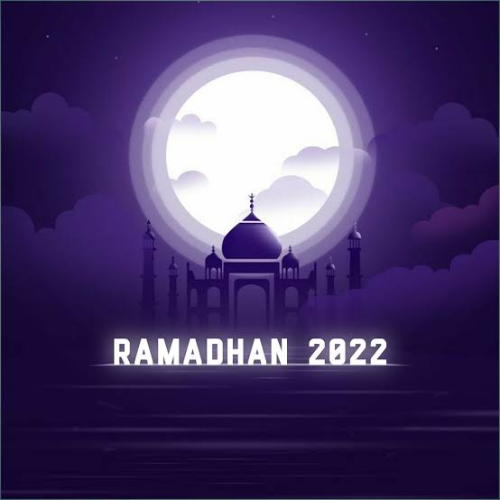

Ramadhan Tiba

from RisBrine
(Risky Febriansyah)
Assalamualaikum
Selamat Menunaikan Puasa
Di bulan Ramadhan Yang Penuh Berkah ini.
Semoga semua orang,Mendapatkan
Syafaat Saat Malam Lailatul Qadar
di tengah Bulan Ramadhan ini
AMIN
[•-•]
[]{}[]
[][]
(20) QUOTE/KATA MUTIARA FOR BULAN RAMADHAN (©)
>~~~~~~~~~~~~~~<
1. "Ramadhan adalah waktu yang tepat untuk memurnikan jiwa Anda bersama dengan tubuh."
2. "Jangan hanya menjalani Ramadhan dengan perut kosong, jalani saja sepenuhnya dengan kesabaran, pengampunan, kebaikan, dan cinta di sekitar."
3. "Bulan suci Ramadhan adalah kesempatan Anda untuk mencari pengampunan dan membebaskan diri dari api neraka."
4. "Ramadhan sedang dalam perjalanan, jadi bicaralah dengan sopan, bersikap baik kepada orang lain dan praktikkan perbuatan baik."
5. "Ramadhan membantu untuk hidup positif dan melepaskan semua perilaku negatif."
6. "Ramadhan seperti angin segar dan dingin di musim panas."
7. "Melakukan apa yang benar dan harus dilakukan, itulah mengapa kita semua bahagia di bulan Ramadhan."
8. "Nabi bersabda: di bulan Ramadhan, Allah membuka semua pintu surga, menutup pintu neraka, dan merantai setan."
9. "Allah berfirman bahwa bulan Ramadhan adalah bulan yang sangat penting dalam kehidupan setiap umat Islam karena pada bulan ini Allah datang ke rumah kita."
10. "Ramadhan berakhir hari ini, tapi jangan khawatir, itu akan datang tahun depan lagi."
11. "Jangan bersikap lembut hanya untuk Ramadhan, bersikaplah lembut sepanjang hidup."
12. "Ramadhan adalah satu-satunya bulan di mana umat Islam menanyakan apa pun yang mereka inginkan dan meminta maaf jika mereka melakukan sesuatu yang salah."
13. "Ramadhan membantu kita terhubung dengan Allah."
14. "Ramadhan itu adalah bulan memberi pertolongan dan bulan Allah memberikan rezeki kepada mukmin di dalamnya."
15. "Bulan Ramadhan adalah bulan penuh ampunan, lebih baik daripada seribu bulan."
16. "Ibadah di bulan Ramadhan harus tetap habis-habisan karena tahun depan belum tentu kembali merasakan."
17. "Fajar Ramadhan menghampiri dunia, seperti selembar sutra yang menghapus noda, sucikan hati, dan bersihkan jiwa."
18. "Bulan Ramadhan, siapa yang siap berlaga, maka surga akan menyambutnya di alam baka."
19. "Setiap malam di bulan Ramadhan, Allah memilih orang untuk diselamatkan dari api neraka."
20. "Ramadhan adalah tentang menghentikan kebiasaan buruk."
Cuma Mengingatkan Kalau
Perjalanan Masih Panjang
©Alam Dunia®
©Alam Kubur®
©Kiamat®
©Hari Kebangkitan®
©Padang Mahsyar®
©Syafaat®
©Hisab®
©Penyerahan Catatan Amal®
©Mizan®
©Telaga®
©Sirot(Surga dan Neraka)®
\ll/
Dan Maaf kalau Saya Ada salah kata
karena Anda telah melihat dan membaca semua kata di web html saya
saya ucapkan terima kasih
WASSALAMU'ALAIKUM
Y
N
T
K
T
S
,_,
[0,0]
|)__)
-”-”-
%Jangan Bolong Puasanya Okh%
/\_/\
(=o-o=)
. (\\-//)>
-Copyright©2022/®RisBrine